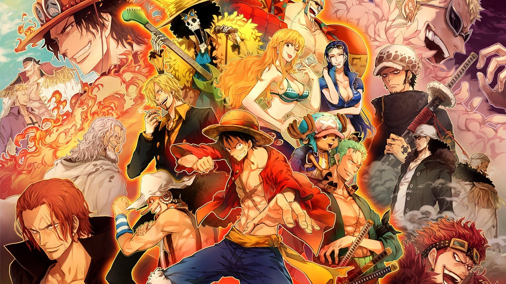

One Pice
Es una popular serie de anime y manga creada por Eiichiro Oda. La historia se centra en un joven llamado Monkey D. Luffy, quien se convierte en un pirata y busca el tesoro más grande del mundo, conocido como "One Piece". En su viaje, Luffy se une a un variado grupo de personajes que comparten su deseo de aventura y lucha contra otros piratas, marines y villanos peligrosos.
Go somewhere